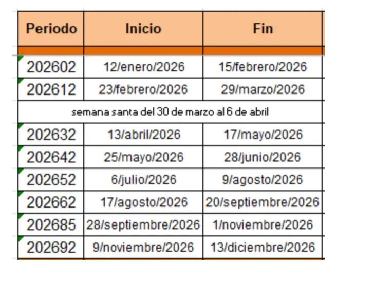
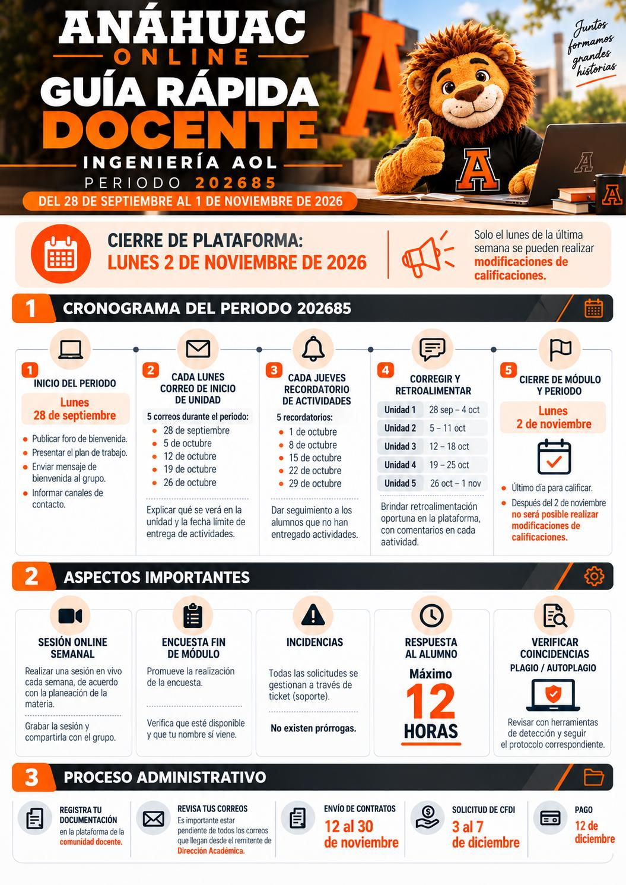
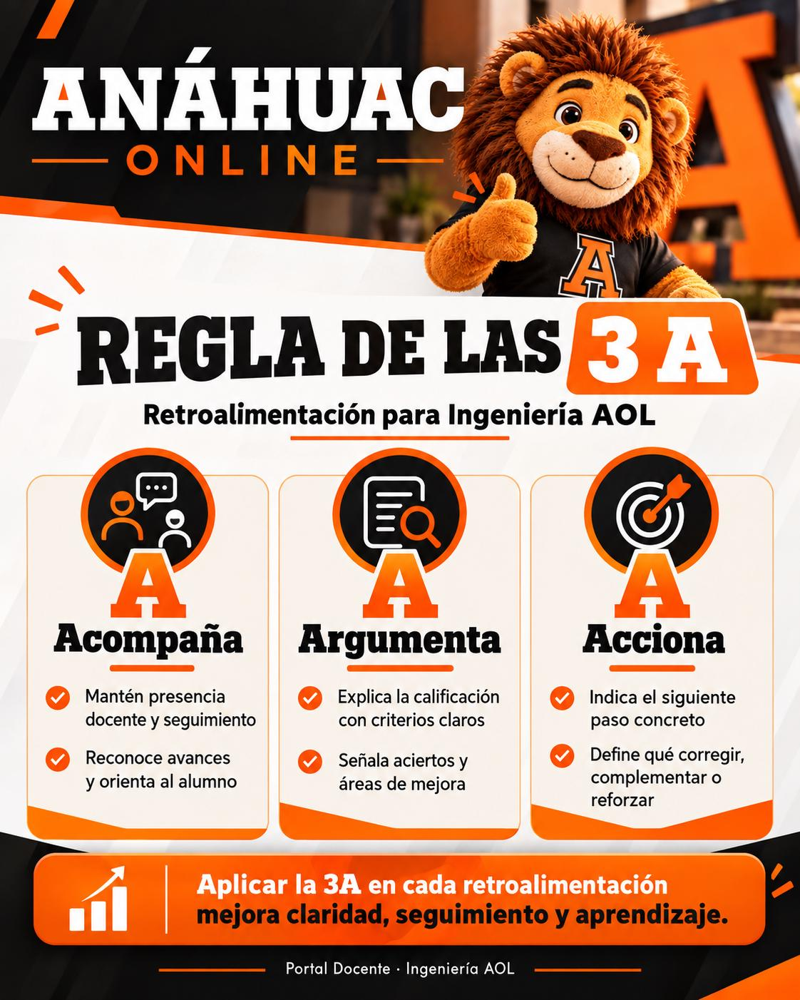

Calificaciones
Procura mantenerlas actualizadas el lunes. En la última semana, concluye la evaluación el lunes y evita espacios vacíos o guiones.
COORDINACIÓN ACADÉMICA · PROGRAMAS DE INGENIERÍA
Información operativa, lineamientos y recursos para la impartición de asignaturas de Ingeniería en Anáhuac Online.
ACCESOS RÁPIDOS
Los accesos operativos se concentran aquí para evitar repeticiones.
OPERACIÓN DOCENTE
Procura mantenerlas actualizadas el lunes. En la última semana, concluye la evaluación el lunes y evita espacios vacíos o guiones.
Realiza al menos una por semana, grábala y registra la liga para respaldo.
El cierre ordinario es el domingo a las 23:00 h. Si no existe entrega, registra 0 y deja constancia en la retroalimentación.
No prometas extensiones directamente. Las situaciones extraordinarias siguen el procedimiento institucional correspondiente.
RECURSOS PROPIOS
Versiones administradas por Ingeniería AOL; no dependen de la página de Notion ni de los documentos originales de otras coordinaciones.
Reglas de operación, calificación, cierre, equipos, sesiones síncronas, Turnitin e IA.
Abrir guíaFrecuencia, duración, grabación, desarrollo y seguimiento de las sesiones.
Abrir lineamientosPlantillas adaptables para bienvenida, foro, no entrega, aclaraciones, equipos y cierre.
Rúbricas, Regla de las 3A, Turnitin, originalidad, aclaraciones y cierre de calificaciones.
Abrir guíaLineamientos de IA y verificación de originalidad para Ingenierías Anáhuac Online.
Consultar lineamientosMaterial propio para profesores titulares y tutores que se incorporan a Ingeniería AOL.
Abrir tallerChecklist docente nuevoCAPITAL HUMANO · ANÁHUAC ONLINE
Información para facilitar el seguimiento de contratos y pagos de docentes de Anáhuac Online.
A partir de los periodos 202642 y 202652, los contratos correspondientes se firman mediante firma digital con e.firma vigente, utilizando los archivos digitales emitidos por el SAT.
El comunicado de Capital Humano señala además un manual de proceso de firma digital para este procedimiento.
CONSULTA DIRECTA
Material gráfico de Ingeniería AOL integrado directamente al portal.




EVALUACIÓN DOCENTE
Acceso individual a las evaluaciones disponibles. La configuración y los permisos existentes se conservan sin cambios.
Disponible: periodo 202652COORDINACIÓN ACADÉMICA
Contacto académico y seguimiento de los programas de Ingeniería en Anáhuac Online.
Coordinación de Programa Anáhuac Online · Escuela de Ingeniería y Actuaría
viridiana.mota@anahuac.mxCoordinación Académica de Programas de Ingeniería AOL
alberto.rodriguezmo@anahuac.mx